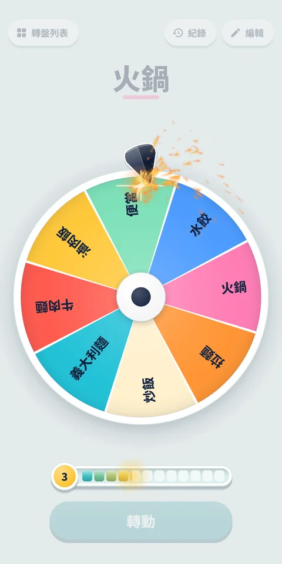
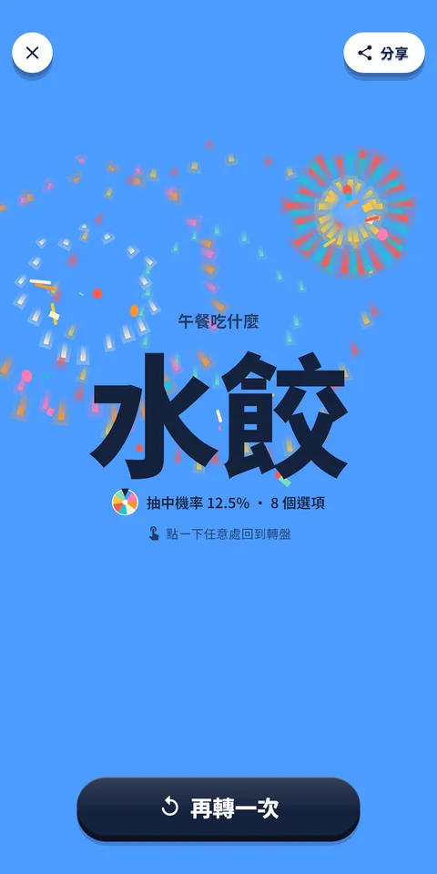
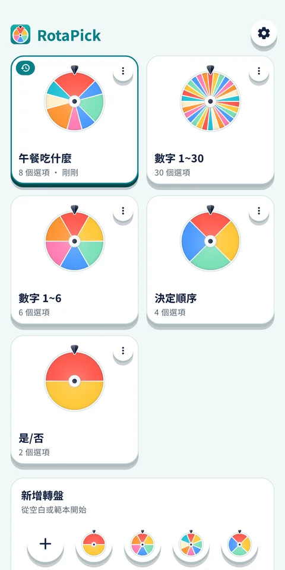
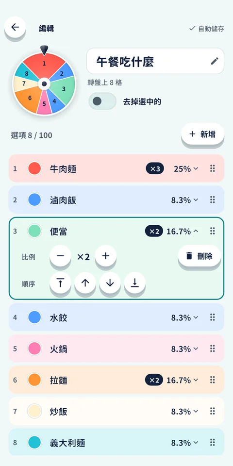
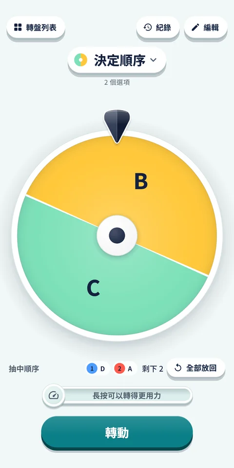
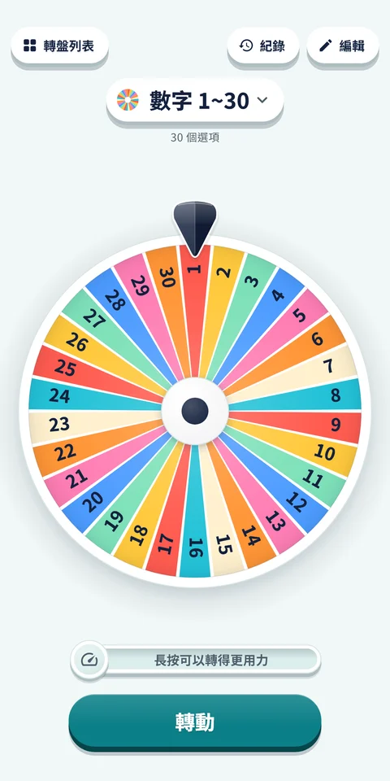
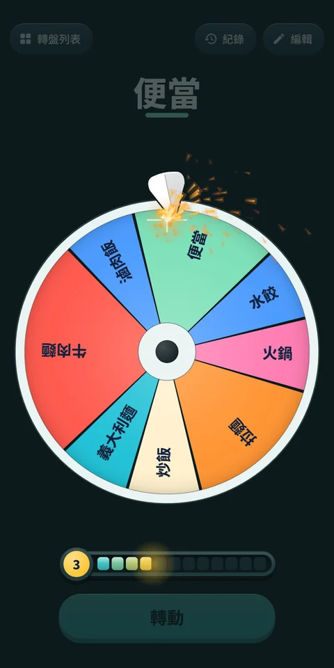

截圖







關於應用程式
| 應用程式名稱 | RotaPick |
|---|---|
| 版本 | 1.0.0 |
| 開發 | Willee Project |
| 支援平台 | Android |
寫下選項，就會產生一個分成彩色格子的轉盤。轉動後，停在指針下的格子就是抽中的結果。午餐吃什麼、決定順序、是/否、抽籤，需要從中選一個時都能用。
- 沒有註冊，也不用登入。你建立的轉盤和紀錄都儲存在裝置裡。
- 沒有網路也能使用。 網路只用於螢幕下方的廣告，以及傳送使用統計和錯誤回報。
- 語言跟隨裝置設定。支援英文、韓文、日文、中文（簡體、繁體），也可以在設定裡自己選。
- 結果不是事先定好的。格子的寬度就是抽中的機率（第8章）。
1. 開始使用
- 第一次開啟時，會直接開啟午餐吃什麼轉盤。名稱下方會出現一次提示「點名稱可換轉盤或新增」。
- 之後會直接開啟你最後使用的轉盤。
- 點名稱牌，或點上方列裡的轉盤列表，就能進入轉盤列表。新轉盤在那裡建立（第4章）。
2. 轉盤畫面
中間是轉盤，上方是轉盤名稱牌和三個按鈕（轉盤列表·紀錄·編輯），下方是力度條和轉動按鈕。
轉動
- 輕點： 短按轉動，以普通力度轉。
- 長按： 按住不放，力度條會慢慢變滿（約1.2秒滿）。放手的瞬間，就以當時的力度轉。力度越大，起轉越快，轉得也越久。
- 撥動： 也可以用手指撥動轉盤。撥得越快，轉得越用力。
- 力度條上的數字是力度（0~10）。按住時顯示累積的力度，撥動時顯示手指的速度，轉動時顯示轉盤的速度。
- 調好力度也無法瞄準某一格。最後一圈之內是均勻抽取的。
- 轉動時間跟隨設定裡的轉動時間（短約3秒、普通約5秒、長約8秒），並會隨力度略微變長或變短（第7章）。
- 指針每越過一條格子邊界，就會有嘀嗒聲和震動。轉動時，原本顯示轉盤名稱的位置會顯示指針下方格子的名稱。
開啟「去掉選中的」時
轉盤下方（力度條上方）會出現抽中順序條，顯示已抽中的格子和剩下的數量。關閉結果後，抽中的格子會縮小並從轉盤上消失。點全部放回，它們都會回來。全部抽完時，會出現「已經全部選完了。」和全部放回。如果只有一個選項有文字，會出現「請至少寫兩個選項。」和編輯按鈕。
3. 結果
- 轉盤停下後，抽中的格子會從轉盤上彈出來，格子的顏色鋪滿螢幕，結果以大字顯示，旁邊還有它的抽中機率。
- 分享：把包含結果和應用程式商店連結的文字傳給其他應用程式。
- 再轉一次：立刻再轉一次。這個按鈕也可以長按來累積力度。
- 點左上角的×，或點螢幕任意處，就會回到轉盤（廣告正上方的細條沒有反應）。
- 結果在抽中的瞬間就會記入紀錄。
4. 轉盤列表
- 轉盤以大圓盤卡片的形式顯示，每列兩個。卡片上有轉盤名稱、選項數量和上次使用的時間（剛剛、時刻、昨天或日期）。開啟「去掉選中的」的轉盤還會顯示剩下/總數。
- 最近使用的轉盤排在最前面。 剛用過的會帶有青綠色邊框和左上角的時鐘標記。
- 點卡片就會開啟那個轉盤。
- 卡片選單：重新命名、複製（會出現在原轉盤的下一個位置（每列兩個，所以也可能在旁邊）「{名稱} 副本」，已去掉的格子會恢復，紀錄為空）、刪除（會先確認一次）。
- 長按卡片並拖曳可以調整順序。
- 在新增轉盤卡片裡，可以從空白開始，也可以選四個範本之一。新增的轉盤排在列表最前面。從空白建立會直接開啟編輯；選範本建立會直接開啟該轉盤的畫面。
| 範本 | 選項 |
|---|---|
| 是/否 | 是、否 |
| 數字 1~6 | 1 到 6 |
| 午餐吃什麼 | 牛肉麵、滷肉飯、便當、水餃、火鍋、拉麵、炒飯、義大利麵 |
| 決定順序 | A、B、C、D（開啟「去掉選中的」開始） |
設定（第7章）透過列表畫面上方的設定按鈕開啟。
5. 編輯
在轉盤畫面點編輯按鈕開啟。修改後會立即儲存，沒有儲存按鈕。
上方有預覽轉盤、轉盤名稱、「轉盤上 n 格 · 已去掉 m 格」和去掉選中的開關。下面是選項列。
- 選項 n / 100： 一個轉盤有2~100個選項。點新增增加一列，在最後一列按鍵盤上的「下一項」也會新增一列。
- 每一列顯示顏色點、文字、×n（比例）和抽中機率（%）。機率是現在這個轉盤上的抽中機率。
- 點一列會展開。可以把比例改成×1~×10（格子會按比例變寬），也可以點刪除。刪除後會短暫出現「已刪除選項」和復原。
- 顏色： 點顏色點會出現8種顏色和自動。自動會選與相鄰格子不同的顏色，移動或刪除列時，顏色會跟著格子走。
- 調整順序： 按住列的把手拖曳，或使用展開列裡的順序按鈕（移到最上面·上移·下移·移到最下面）。
- 開啟去掉選中的後，抽中的格子會離開轉盤，直到你點全部放回。已去掉的格子會變淡，並標上「已選中」。
6. 紀錄
在轉盤畫面點紀錄按鈕開啟。每個轉盤保留最近50筆。
- 抽中最多： 抽中次數條和格子的寬度（%）並排顯示。次數是實際抽到的結果，%是這個格子應得的份額。
- 下方依今天、昨天和日期分組，由新到舊顯示結果。
- 點清除紀錄，確認一次後，就會清除該轉盤的紀錄。
7. 設定
透過轉盤列表的設定按鈕開啟。分為兩組。
聲音與效果
| 項目 | 作用 |
|---|---|
| 音效 | 開啟或關閉嘀嗒、停止、結果和煙火的聲音 |
| 震動 | 開啟或關閉轉動和停止時的震動 |
| 減少特效 | 減少火花、煙火、顏色擴散等特效 |
| 轉動時間 | 在短（約3秒）、普通（約5秒）、長（約8秒）中選擇 |
一般
| 項目 | 作用 |
|---|---|
| 語言 | 選擇跟隨系統（預設），或從列表中選擇（English · 日本語 · 한국어 · 简体中文 · 繁體中文） |
| 隱私權選項 | 重新開啟廣告同意表單。僅在需要同意的地區（如歐洲）顯示 |
| 關於 | 版本、本說明（使用說明）、在 Google Play 上評分、隱私權政策、開放原始碼授權、更多應用程式（點一下會開啟 Google Play）和查看全部應用程式 |
螢幕顏色跟隨裝置的深色模式設定，應用程式內沒有單獨的開關。
8. 公平性
- 格子的寬度就是機率。 沒有隱藏的比例。×2的格子是×1格子的兩倍寬，抽中的機率也是兩倍。
- 結果不是事先定好的。每次轉動都會隨機抽取起轉速度和減速方式，停下時的角度決定哪一格。
- 力度和轉動時間只是演出，不能用來選格子。
9. 廣告與資料
- 螢幕最下方有一個橫幅廣告。這是唯一的廣告，轉盤畫面的轉動按鈕和轉盤與廣告保持著足夠的距離。開啟鍵盤時，廣告條會被隱藏。
- 在需要同意的地區（如歐洲），第一次開啟時會出現廣告同意表單。之後可以在設定的隱私權選項裡變更。
- 沒有應用程式內購買。
- 轉盤、選項、顏色、比例、紀錄和設定只儲存在裝置上，不會傳送到伺服器。如果開啟了 Google 備份（Android 自動備份），它們會一併備份。解除安裝應用程式會刪除裝置上的資料。
- 詳情請見隱私權政策。